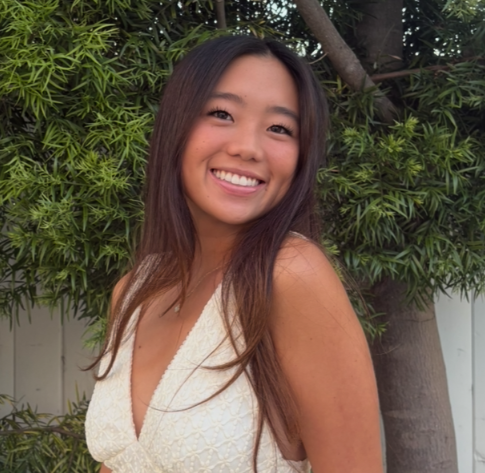

01
Calista Chun
Founder & Board President
Calista is a high school student with interests in mathematics, history, Model United Nations, and varsity tennis. Her experience navigating social media inspired her to create Project CLEAR and help students learn how to separate fact from opinion. She believes media literacy is an essential skill for participating responsibly in today’s society.